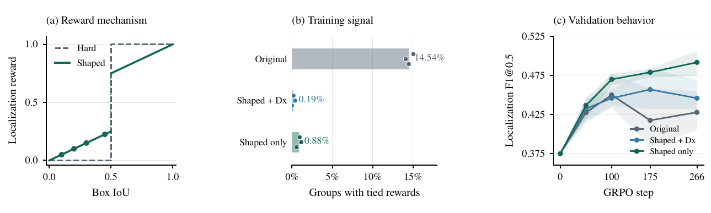

组相对策略优化（Group Relative Policy Optimization，GRPO）通过比较同一输入所采样生成的报告来学习。硬性重叠阈值可能让质量不同的边界框得到相同的定位分数；当总奖励也相同时，组相对任务优势便全部为零。本文研究：加入连续的交并比（intersection-over-union，IoU）是否能提高奖励的信息量，以及这种改变能否提升结构化脑部 MRI 报告中的定位效果。我们使用共同的监督微调（supervised fine-tuning，SFT）初始化模型、冻结的 SFT 参考策略及相同训练预算，比较三种奖励配置，各运行三个随机种子。在诊断奖励保持不变时，连续奖励塑形将同分组的平均比例从 14.54% 降至 0.19%，且三个种子的结果方向一致。经验证集选择的“仅定位塑形”配置，测试集平均 F1@0.5 为 0.4189，SFT 为 0.4009（差值 +0.0180；按种子和病例配对的 bootstrap 95% 区间为 [−0.0566, +0.0908]）。最明确的发现是 GRPO 奖励的区分能力有所改善；下游定位增益幅度有限，且仍有不确定性。
关键词：强化学习；GRPO；奖励塑形；病灶定位；医学视觉语言模型
结构化脑部 MRI 报告包含病灶坐标、影像描述和拟诊诊断。NOVA 基准为这些输出提供专家标注[1]。本项目聚焦报告中的定位任务：模型需生成与标注异常区域重叠的坐标。SFT 学习参考报告中的坐标 token，而任务指标取决于最终边界框集合的几何位置。不同坐标字符串可能表示同样有用的边界框，坐标稍有变化也可能跨过匹配阈值。强化学习（reinforcement learning，RL）可以直接优化模型生成报告的几何得分。
该得分是否有效取决于学习算法。GRPO 通过比较同一输入的多个生成结果估计优势[2]。若所有结果得到相同奖励，其任务奖励优势均为零。即便采样边界框与目标区域的重叠程度不同，基于阈值的定位奖励仍可能产生这种情况。例如，IoU 分别为 0.10 和 0.45 的两个边界框都未达到 0.5 的匹配阈值，但后者显然是更好的定位提议。
本文的研究问题是：连续 IoU 奖励塑形能否减少 GRPO 中无信息量的奖励同分，并使所得策略相较于较强的 SFT 初始策略改善定位？ 这是两个不同的实证问题。训练日志用于检验奖励是否为组内样本提供了更多区分；在训练期间未见的病例上的定位表现，则用于检验这些区分是否转化为有效行为。仅仅减少同分，并不能证明定位有所改善。
我们通过三种奖励配置和三个 GRPO 随机种子进行受控比较。第一项对比只改变定位奖励，同时保留诊断奖励；第二项移除诊断奖励，以考察聚焦定位的目标。全部九次运行共用相同的 SFT 策略、冻结的 KL 参考策略、数据和优化预算。本文的贡献是将明确的 GRPO 失效机制、具体的奖励干预，以及对学习信号和下游定位的测量联系起来。配置和检查点均依据验证集选择，三种配置的测试集结果全部报告。
GRPO 以采样生成组的相对奖励取代学习得到的价值基线[2]，其策略更新采用与近端策略优化（Proximal Policy Optimization，PPO）相关的裁剪目标[3]。当单独训练 critic 会增加成本时，确定性的标注奖励因此颇有吸引力。组内结果相同是已有研究指出的局限：DAPO 通过动态采样过滤这类组[4]。本文固定采样预算，改为调整对部分定位成功的评分方式。
Visual-RFT 已将 IoU 奖励用于视觉定位任务[5]；MedVLM-R1 则研究了医学视觉推理中的强化学习[6]。我们并不声称连续 IoU 是新的奖励原理，而是考察将其与硬性边界框匹配奖励结合后，如何影响结构化脑 MRI 报告中的 GRPO 学习信号。本文按照课程作业的路径二开展应用研究，并非复现已发表的基准结果。我们在 NOVA 上使用内部的病例级切分；该基准原本设计用于评估[1]。
观测 o = (I, H, P) 包含 MRI 切片 I、临床病史 H，以及固定的报告指令 P。在 token 步 t 时，状态为 st = (o, y<t)。动作 at ∈ 𝒱 是下一个 token；状态转移将该 token 追加至已生成前缀。策略采用 Qwen3.5-9B[7]，并训练其 LoRA 适配器[8]。模型按固定的中文标题生成三个部分、每部分为英文内容：480 像素坐标系中最多三个边界框、影像描述、鉴别诊断和最终诊断。后续动作以较早生成的报告 token 为条件。
每轮生成在输出序列结束 token 处终止，或在达到 512 个新 token 上限时终止。所有中间时刻的奖励均为零，折扣因子 γ = 1；确定性验证器将完整报告 y 与训练标注 z 进行比较并给出奖励。优化目标为：
训练过程依次采样报告、计算终点奖励、估计组相对优势并更新策略。由于一轮中的图像和病史保持不变，此任务也可以视为上下文老虎机问题：将完整报告看作一个动作，而策略用逐 token 决策来实现这一动作。RL 在此适用于直接优化报告层面的几何指标，但不表示模型在与临床工作流程进行交互。评估时仅使用观测 o，不提供参考标注。
统一解析器从预测结果和参考答案中提取边界框。奖励预处理使用逐条生成结果的尺度启发式，将坐标转换到 480 像素坐标系、裁剪越界坐标、移除退化边界框、以非极大值抑制去除重叠重复框，并最多保留三个框。三种奖励配置均采用相同预处理。随后按 IoU 从高到低进行贪心配对，每个预测框和参考框均至多匹配一次。
原始定位奖励中，TP 表示 IoU ≥ 0.5 的匹配对数，FP 和 FN 分别表示未匹配的预测框数和参考框数。实际实现的分数为：
这是一种边界框集合的 Jaccard 分数，与评测使用的 F1 不同。当前有效样本至少包含一个参考框；预测为空或没有任何匹配时，得分为零。
令 np 和 ng 分别表示保留的预测框数和参考框数，𝓜+ 表示 IoU 严格大于零的贪心匹配对。我们定义连续质量项及塑形奖励如下：
若没有正重叠配对，质量项为零。未匹配的框仍计入分母。举例来说，对于一个预测框和一个参考框，若四条生成结果的 IoU 分别为 0.10、0.20、0.30、0.45，则四者的 Rhard 都为零，但 Rshape 分别为 0.05、0.10、0.15、0.225。因此，当诊断奖励相同时，硬阈值目标无法提供组内相对任务优势，而连续塑形可以区分这些结果。该奖励保留了 IoU 达到 0.5 时的跃升（图 1a）。塑形改变的是终点奖励，并未增加逐 token 的中间奖励。
原始的组合目标也对诊断进行奖励：
最终诊断若经规范化后完全匹配则得 1 分，宽松 token 匹配则得 0.8 分，否则为 0。鉴别诊断分数是参考鉴别诊断经一对一匹配后的命中比例。格式分要求三种标题齐全、影像描述和最终诊断均非空；缺少诊断标题时，RDx 记为零。奖励不使用学习得到的 reward model。
表 1 给出三种配置。比较 Original 与 Shaped + Dx，可以在保留诊断奖励的条件下隔离定位奖励替换的影响。比较 Shaped + Dx 与 Shaped only，则考察移除诊断分量（包括格式奖励）的影响。两个组合奖励的范围为 0 至 2；Shaped only 的范围为 0 至 1。所有启用的奖励权重均为 1。
| 配置 | 终点奖励 | 对比目的 |
|---|---|---|
| Original | Rhard + RDx | 阈值奖励对照 |
| Shaped + Dx | Rshape + RDx | 定位奖励塑形 |
| Shaped only | Rshape | 聚焦定位目标 |
对于每个输入，GRPO 使用 rollout 策略 πold 采样 G = 4 份报告。对终点分数 r1, …, rG，第 i 份报告的优势为：
其中 r̄ 和 σr 分别是该组的均值和样本标准差。同一报告中的所有生成 token 共用这一优势。令 ρi,t = πθ(yi,t|si,t) / πold(yi,t|si,t)，则逐 token 优化目标为：
其中 ε = 0.2，β = 0.001，d̂i,t 是实现中采样得到的逐 token KL 惩罚。目标先对每份报告中的生成 token 求平均，再对报告求平均。KL 参考策略 πref 是 SFT 初始策略的一个独立冻结副本。
GRPO 适合此场景，因为可验证的终点分数能在组内比较报告，而无需额外拟合 critic。公式（5）也明确给出了失效机制：四个奖励相同时，每份报告的 Âi 均为零。这样的组无法提供基于任务奖励的更新，但 KL 项仍可能参与更新。我们的训练诊断指标是“总奖励标准差为数值零的组占比”；存在诊断奖励时，该指标基于包含诊断分量的总奖励计算。

我们从公开 NOVA 数据中保留了 235 个具有有效定位和报告标注的病例、共 779 张图像。采用随机种子 42 的切分方案，将 164/35/36 个病例、533/135/111 张图像分别分配至训练集、验证集和测试集。同一病例中的图像不会跨越不同数据集。数据审计检查切分互斥、图像可用性、边界框和诊断有效性，以及 SFT 标签与 GRPO 参考解之间的一致性。
主要基线是 GRPO 的共同初始策略：完成三个 SFT epoch、即经过 201 次优化步骤的 Qwen3.5-9B（记为 SFT-201）。它用于衡量从一个已适配策略继续进行 RL 的效果。另设固定中心框 [120,120,360,360] 作为空间启发式对照，并在同一测试图像上评测。实验固定模型主干，重点比较奖励设计；初始策略或参考策略不同的早期实验不纳入主要对比。
我们使用 ms-swift[9]，LoRA 秩设为 16、缩放参数 α = 32；冻结视觉塔，训练对齐器。SFT 的学习率为 5×10−5，最大序列长度为 1024，使用四张 RTX 3090 GPU，有效 batch size 为 8。每种 GRPO 配置训练 266 次优化步骤，学习率为 5×10−6、最大序列长度为 2048，使用两张 RTX 3090 GPU，每设备 batch size 为 1、梯度累积步数为 4。采样温度为 0.9，top-p 为 0.95，最多生成 512 个 token。
种子 42、43、44 控制 GRPO 采样和数据顺序的变化；三个种子共用同一 SFT 初始化。九次运行使用相同的训练切分、提示词、rollout 预算、解码参数及冻结的 SFT 参考策略。适配器审计验证初始策略和参考策略一致、审计节点上的参考策略哈希未变化，且最终策略适配器已更新。SFT 和 GRPO 评估均使用相同推理后端进行贪心解码，新 token 上限为 512，并关闭 Qwen thinking。
主要指标为未经校准的逐图像定位 F1@IoU 0.5：
该指标在所有图像上求平均。评测使用贪心的一对一匹配、基于整个文件的坐标推断，并保留重复预测框。奖励预处理则按单条生成结果推断坐标尺度并对重复框进行抑制；三种配置均采用这两套共同设置。平均 IoU 先计算每张图像正 IoU 贪心匹配对的平均值；无正匹配的图像记为零，随后对图像求平均。
每次运行根据验证集 F1@0.5，从 SFT 第 0 步和 GRPO 第 50、100、175、266 步中选择检查点；若 F1 相同，则依次比较平均 IoU 并优先选择更早的步骤。随后按各配置被选检查点在全部种子上的平均验证 F1 选定奖励配置。在新一轮测试推理开始前锁定这些选择。我们还评测每次运行固定预算下的最终第 266 步。验证集结果用于模型选择，不视为独立的泛化估计。
对于相对于 SFT 的测试集差值，我们进行 4,000 次配对 bootstrap 重采样[10]，每次有放回地抽取三个 GRPO 种子和 36 个完整测试病例。SFT 与对比策略使用同一批重采样图像；每个病例内的图像仍按原样分别计权。报告百分位数 95% 区间和跨种子的样本标准差。作为几何校准对照，我们在验证集上从 1.00、1.05、…、1.50 中选择边界框尺度（按 F1 优先、平均 IoU 次之），再应用到测试集。诊断关键词 Top-1 和描述 token F1 属于次要的词汇匹配指标。
| 策略 | 验证集均值 | 测试集 种子 42 | 测试集 种子 43 | 测试集 种子 44 | 测试均值 ± SD | 相对 SFT 差值 Δ | Δ 的名义 95% 区间 |
|---|---|---|---|---|---|---|---|
| SFT-201 | 0.3746 | — | — | — | 0.4009 | — | — |
| Original | 0.4498 | 0.4474 | 0.3799 | 0.3739 | 0.4004 ± 0.0409 | −0.0005 | [−0.0792, +0.0761] |
| Shaped + Dx | 0.4630 | 0.4324 | 0.3799 | 0.4144 | 0.4089 ± 0.0267 | +0.0080 | [−0.0602, +0.0775] |
| Shaped only | 0.4936 | 0.4279 | 0.4099 | 0.4189 | 0.4189 ± 0.0090 | +0.0180 | [−0.0566, +0.0908] |
保持诊断奖励不变，以 Rshape 替换 Rhard 后，同分组的平均比例从 14.54% 降至 0.19%（图 1b）。三个种子上的结果一致：Original 为 14.10%–15.04%，Shaped + Dx 为 0.00%–0.38%。Shaped only 的同分率也较低，平均 0.88%（范围 0.56%–1.13%）。该对比将奖励干预与公式（5）对应起来：训练期间总奖励完全相同、因而任务优势为零的采样组显著减少。
方法部分 3.2 节的解析示例说明了部分重叠为何能解除同分；训练日志则表明这种降低也出现在训练过程，而非只存在于数学示例中。由于三个策略各自演化，实测同分率同时受到评分规则和该策略所采样边界框的影响；这并不是对同一组固定 rollout 进行重新打分的对照。此外，两种奖励即使都能避免同分，也可能将不同生成结果排出不同顺序。因此，我们另行检验定位表现，不把训练诊断本身视为任务效果。
测试集中心框启发式的 F1@0.5 为 0.077，SFT-201 则为 0.4009。这表明经过适配的 SFT 策略明显优于固定空间先验。表 2 给出各奖励配置与该基线的对比。选中检查点的平均验证集 F1 从 Original 的 0.4498，增至 Shaped + Dx 的 0.4630，再增至 Shaped only 的 0.4936。图 1c 显示统一评测步数上的表现，而不仅是验证集选中检查点的分数。
根据验证集，Shaped only 为种子 42、43、44 分别选择第 266、175、266 步。三者的测试集分数为 0.4279、0.4099、0.4189，均高于 SFT-201。平均增益为 +0.0180，即 F1 提高 1.80 个百分点；名义 95% 区间为 [−0.0566, +0.0908]。这说明该测试切分上的点估计略为正，但尚不能确定总体效应。表 2 也显示，在保留诊断奖励的受控对比中，定位塑形的测试均值增益较小，为 +0.0080。
在统一的训练终点第 266 步，Original、Shaped + Dx、Shaped only 的平均测试 F1 分别为 0.3914、0.4149、0.4159。在该端点上，塑形配置仍高于 Original；这些排序仅作描述性比较。Shaped only 的最终检查点中，两个种子高于 SFT，一个种子与 SFT 持平。因此，对所有种子统一评估训练终点后，平均增益仍然存在。
SFT-201 的平均测试 IoU 为 0.4028，选中检查点的 Shaped only 为 0.4445，与框重叠程度整体提高相一致。使用验证集拟合边界框尺度，将 SFT F1 从 0.4009 提高至 0.4069；三个 Shaped only 检查点选出的尺度均为 1.00，F1 保持在 0.4189。因此，经过校准后的差值为 +0.0120（95% 区间 [−0.0613, +0.0850]）。简单的尺度调整只能解释部分 F1 差异，且无法消除统计不确定性。
最有力的发现是：在诊断分量保持不变时，连续奖励塑形稳定地减少了零优势组。奖励公式说明其机制，训练日志测量该机制在训练过程中的实际出现频率，而病例分组后的测试评估则检查下游行为。三者分别回答研究问题的不同部分。Shaped + Dx 的同分率最低；Shaped only 的选中验证 F1 和平均原始测试 F1 最高。因此，避免同分提供了额外学习机会，但并不保证奖励差异一定有利于目标行为。
本文的贡献是在这一应用中对奖励信息量进行受控研究。九次运行都使用同一个冻结参考策略，因此本实验没有单独验证冻结参考策略的作用。移除诊断奖励同时改变了奖励组合；现有实验无法判定其定位效果究竟源于目标竞争、奖励权重，还是其他优化因素。对选中的 Shaped only 策略而言，诊断关键词 Top-1 从 0.1081 降至 0.0631，描述 token F1 从 0.2504 降至 0.2427。因此我们的结论限于定位，不推断整体报告质量有所改善。
测试集包含 36 个病例，且只使用一个切分；三个 GRPO 随机种子共用同一个 SFT 初始化。虽然新一轮测试推理之前已经锁定配置和检查点的选择，但此前的开发过程中已查看过同一测试集。本研究的 bootstrap 区间仅供探索性参考，未对这段历史进行校正。使用新的数据切分和多个 SFT 初始化将能提供更有力的泛化证据。还需要进行等算力的继续 SFT 对照，才能区分 GRPO 本身的作用与对初始策略进一步优化的作用。
启发式坐标解析，以及奖励预处理与评测预处理之间的差异，使奖励未能与任务指标完全一致。诊断和描述的词汇匹配分数也无法衡量临床质量。本文内部采用的 NOVA 适配方案与原基准的评测协议有所不同。依赖项、训练参数覆盖设置、选择规则，以及从已有实验产物重新生成主要结果和图表的命令，记录在 paper/REPRODUCE.md 中；仅重新生成本报告无需再次训练模型。
连续 IoU 奖励塑形针对的是 GRPO 学习信号中的一个具体问题：硬定位阈值可能使不同质量的采样报告得到完全相同的奖励。在三个随机种子上，当诊断奖励保持不变时，塑形将同分组比例从 14.54% 降至 0.19%。经验证集选出的仅定位目标，相较于共同的 SFT 初始策略，在测试集上取得小幅平均提升，但不确定区间仍包含零。本研究的实际启示是，评估奖励设计时，应同时考察组内区分能力和下游任务指标；相对优势增加是关于优化过程的有用证据，但仅凭这一点并不能证明模型具有泛化能力。
[1] C. I. Bercea 等，〈NOVA：用于脑 MRI 异常定位和临床推理的基准〉，arXiv 预印本，arXiv:2505.14064，2025。
[2] Z. Shao 等，〈DeepSeekMath：推动开放语言模型数学推理能力的发展〉，arXiv 预印本，arXiv:2402.03300，2024。
[3] J. Schulman 等，〈近端策略优化算法〉，arXiv 预印本，arXiv:1707.06347，2017。
[4] Q. Yu 等，〈DAPO：开源的大规模语言模型强化学习系统〉，arXiv 预印本，arXiv:2503.14476，2025。
[5] Z. Liu 等，〈Visual-RFT：视觉强化微调〉，arXiv 预印本，arXiv:2503.01785，2025。
[6] J. Pan 等，〈MedVLM-R1：通过强化学习激励视觉语言模型的医学推理能力〉，arXiv 预印本，arXiv:2502.19634，2025。
[7] Qwen 团队，〈Qwen3.5-9B 模型卡〉，2026。本研究使用的检查点随附的本地模型卡。
[8] E. J. Hu 等，〈LoRA：大型语言模型的低秩适配〉，国际表征学习会议（ICLR），2022。
[9] ModelScope，〈ms-swift：大型语言模型及多模态模型微调框架〉，2024。
[10] B. Efron 和 R. J. Tibshirani，《Bootstrap 导论》，Chapman & Hall/CRC，1993。